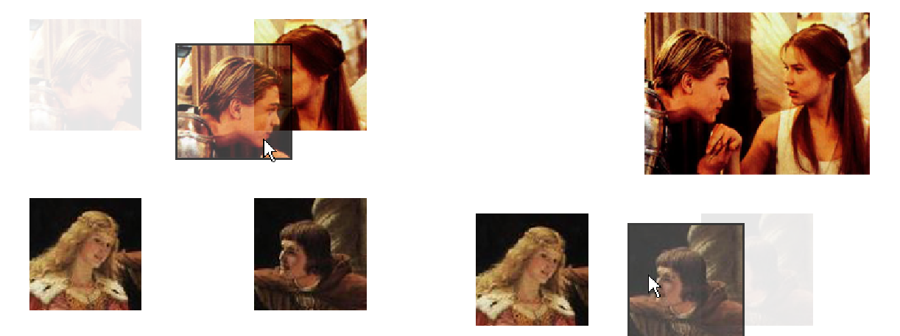

The drag-and-drop component is a panel in which widgets are allowed to be … dragged and dropped. Any kind of widget can be used, the panel is entirely responsible for adding the drag an drop capability
.
The drag-and-drop component relies on the following concepts:
The compatibility tells whether a (dragged) widget can be dropped on another one (the target). The first widget has to be declared as a draggable widget to the panel for the given compatibility, and the other widget has to be declared as a target for the same compatibility. A compatibility is just a string.
A given widget can be draggable and a target at the same time. It can be involved in more than one compatibility rule. For instance, a widget w1 could be target for a widget w2 according to the compatibility “comp1”, and w1 could also be dropped on yet another widget w3 according to the compatibility “comp2”. The code corresponding to this example is:
If a draggable widget happens to be dropped on a target widget (or on a non-target widget, or on nothing) with which it shares no compatibility at all, the dragged widget goes back to its original position.
This system is quite flexible and allows about any combination:
Note that the drag-and-drop panel can contain widgets which are neither targets nor draggable.
Drag and drop operations produce events which can be handled programmatically. It is even possible to block a move when compatibility rules are satisfied. Events are dispatched to objects implementing DragAndDropListener interface, and registered in the panel. The next section of this document presents this interface in details.